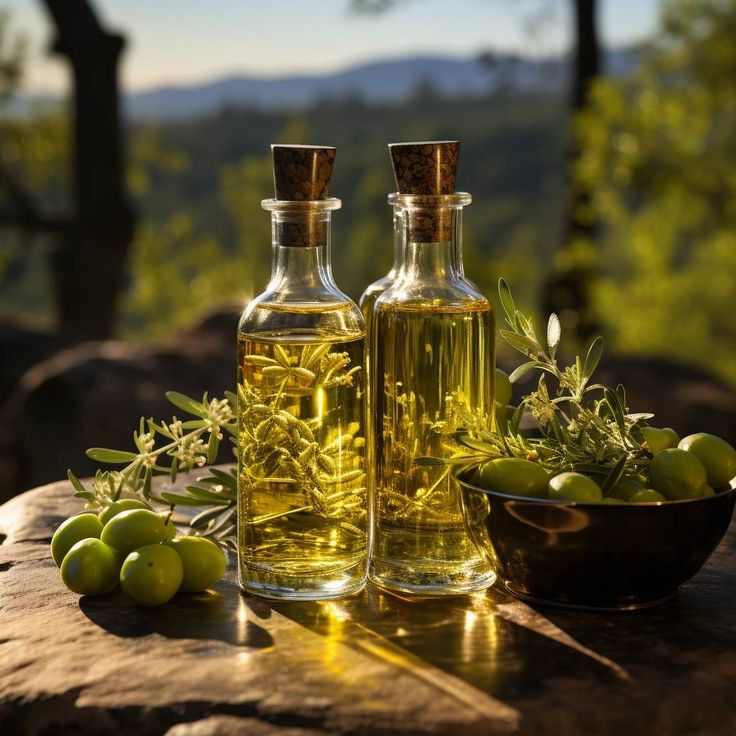
Elevation: 550m • Basalt Soil
Sicilian Volcanic Slopes
Basalt soils yielding dense oils with wild oregano aromatics sharp herbaceous finish.
Pure unblended single-grove pressings and private solera balsamic batteries.
Elevation and soil minerality dictate polyphenol richness and aromatic density.

Basalt soils yielding dense oils with wild oregano aromatics sharp herbaceous finish.
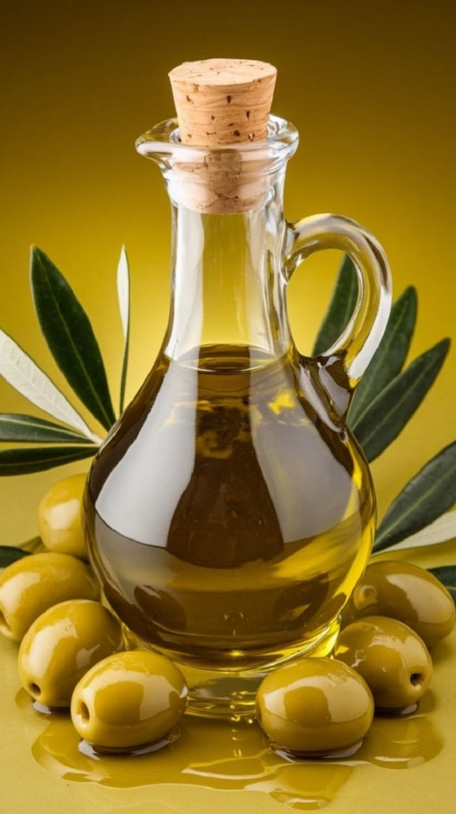
Maritime breezes nurture gentle Koroneiki drupes with sweet golden apple elegance.
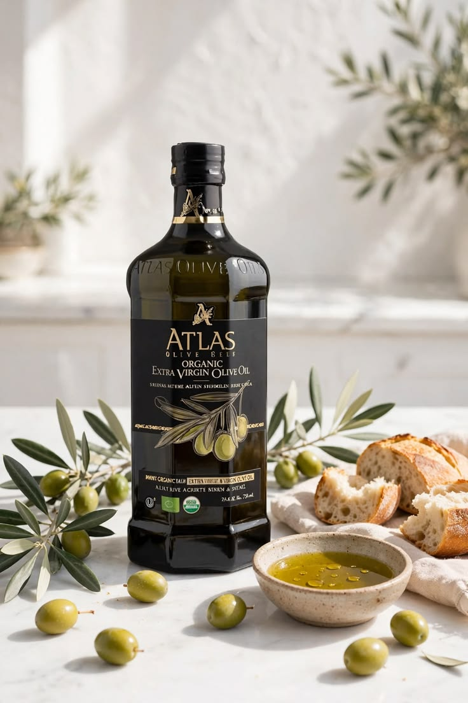
Limestone peaks stress trees naturally, producing maximum oleocanthal antioxidants.
Numbered pressings and single-wood solera vinegars from century-old artisan batteries.
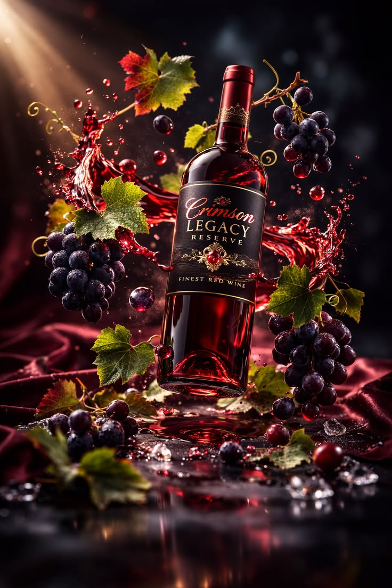
Cherry Cask No. 14Sweet cherrywood resin with delicate acidity, ripe red fruit, and velvety chocolate tones.
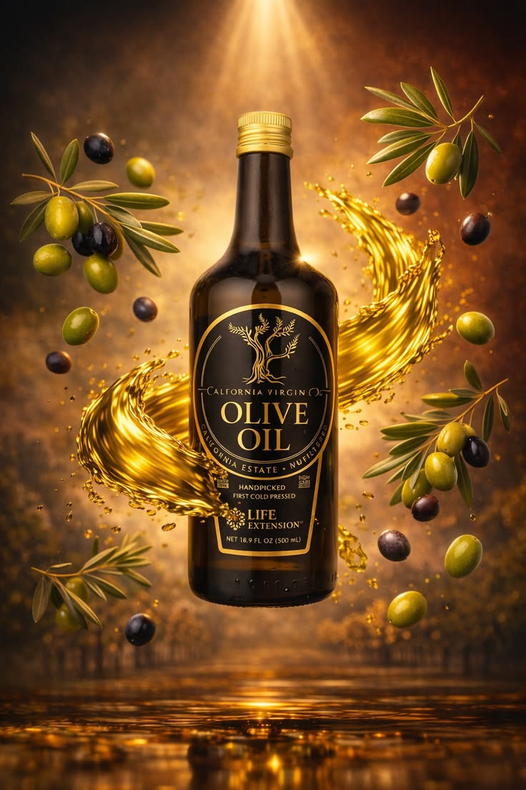
Juniper Cask No. 08Pungent mountain wood imparting herbal pine needles and wild pepper game meats.
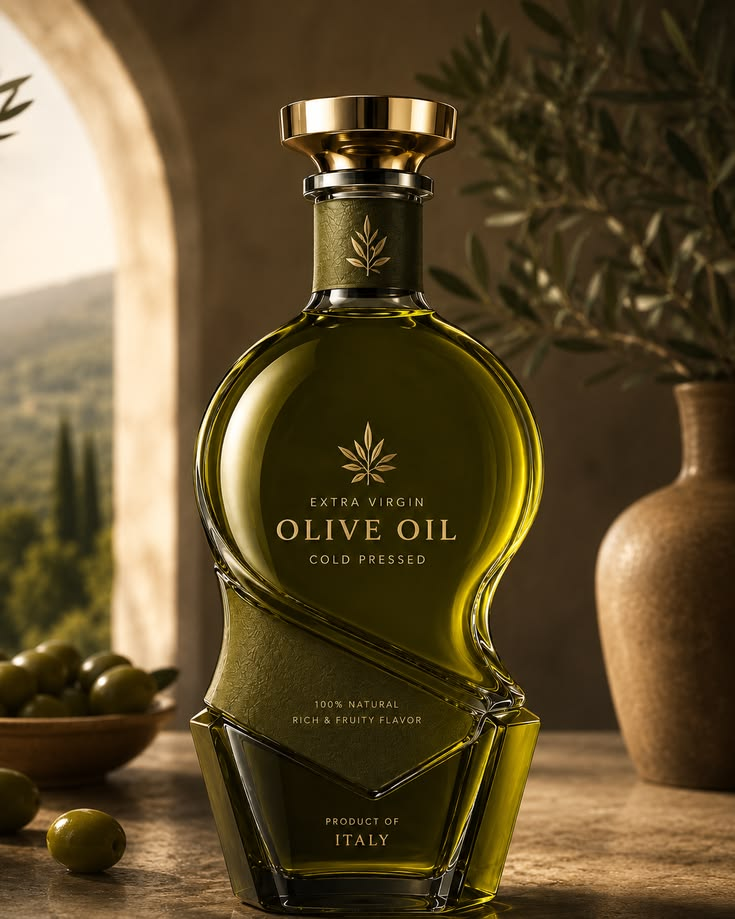
Grand Solera No. 02Syrupy density with layered prune, pipe tobacco, and crystallized fig finish.
Strict 24-hour protocol from green branch to dark glass bottle.
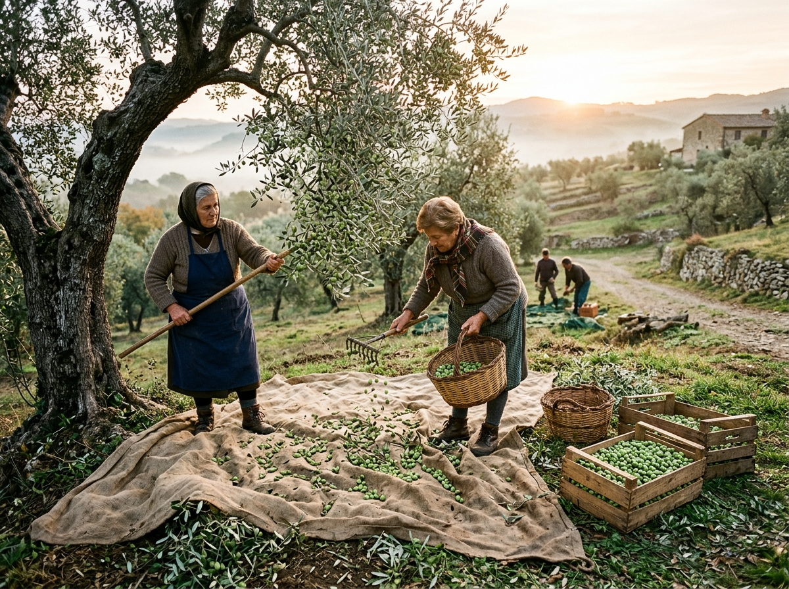
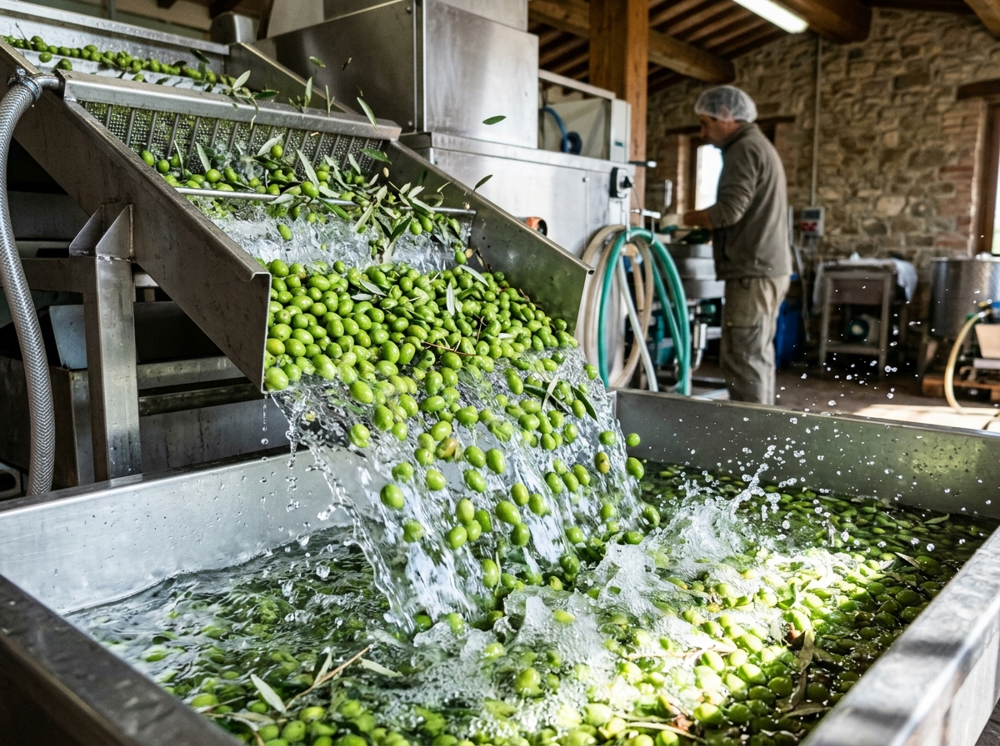
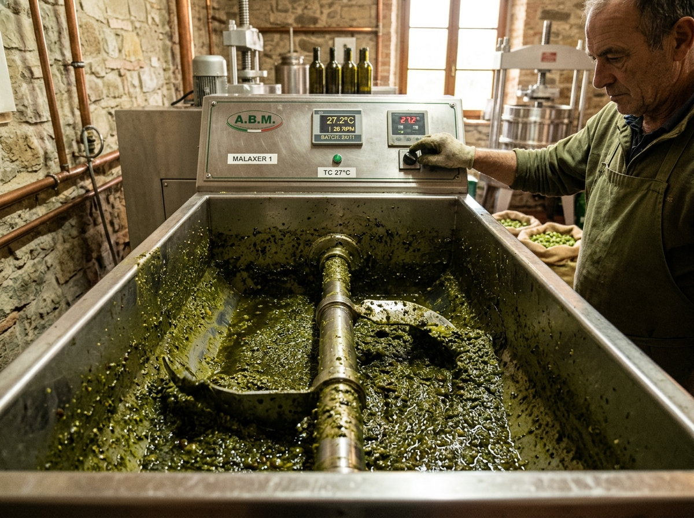
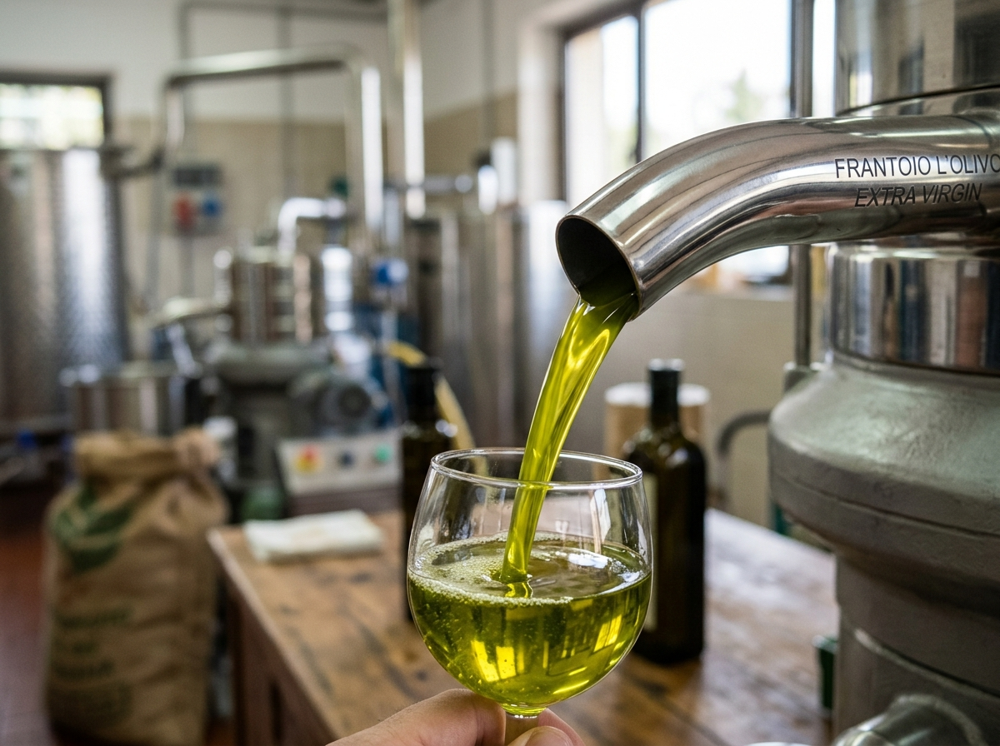
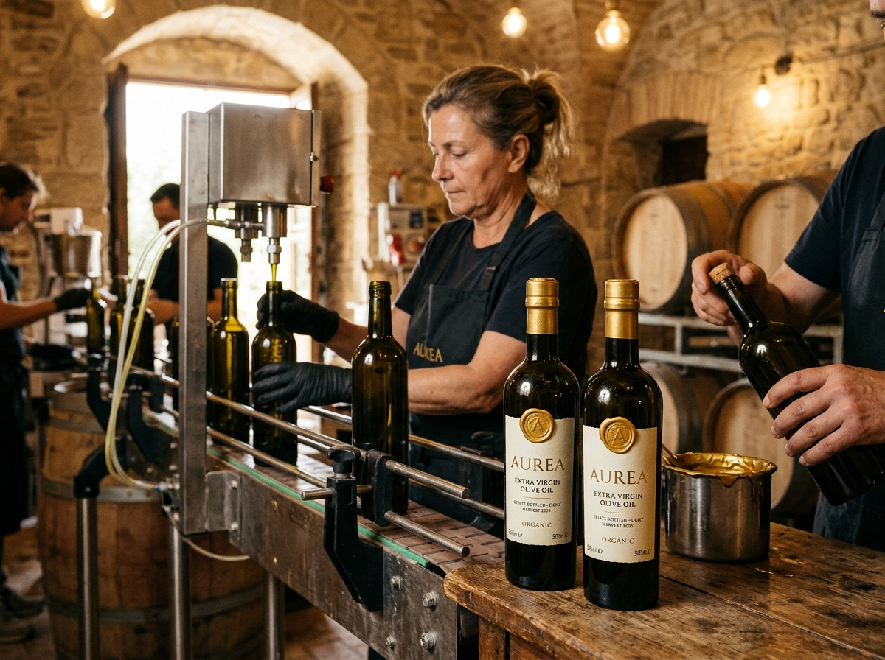
Organoleptic profiles evaluated by certified master olive oil panels.
Intensely herbaceous and pungent for sourdough, aged steak, and bitter greens.
Silky and floral with sweet green apple notes for crudo, mozzarella, and salads.
Cellar access to unreleased private solera barrels, personalized wax-sealed bottling, and seasonal first-press deliveries.
Limited to 150 members globally per harvest year. Personalized embossed wax seals included.